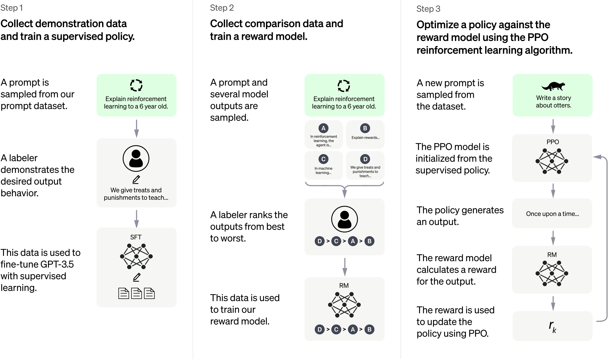

- Understanding the ChatGPT Project
- The ChatGPT project is a remarkable development in the field of artificial intelligence (AI). The goal of this project is to create a computer system that can understand and generate text in a way that resembles human conversation. This technology uses deep learning algorithms and vast amounts of data to produce responses that seem like they were written by a person.
- What We Learned from the ChatGPT Project
- Building an AI system like ChatGPT is a complex and demanding process. One of the main challenges
was collecting and using a large amount of high-quality data to train the system. The team also had
to ensure that the text generated by the system was accurate and made sense.
Despite these challenges, the ChatGPT project has been very successful, and it has taught us a lot about the possibilities of AI in natural language processing. The project has paved the way for further advancements in the field of AI and has provided valuable insights for other organizations looking to implement similar systems. - How the ChatGPT Project Can Improve Our Lives
- The ChatGPT project has the potential to make our lives easier by automating tasks that would
normally require human intelligence. This technology can be used in customer service, content
creation, virtual assistants, and many other fields. By making AI systems more accessible and
effective, ChatGPT has the power to increase efficiency, accuracy, and customer satisfaction.
The impact of the ChatGPT project is far-reaching and exciting, and it serves as a prime example of how AI can change the way we interact with technology. The future is limitless, and as AI continues to evolve, the ChatGPT project will remain a valuable case study for organizations looking to harness the full potential of AI in natural language processing.
How Chatgpt works
